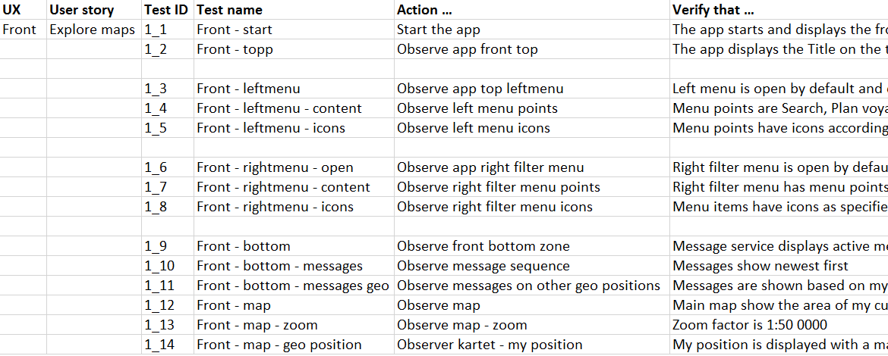

{{> header}}

<div class="article-wrapper">


    <h5>Method</h5>

    <h1>Test cases</h1>

    <h2>No design is complete without test cases. Step by step. Cause and effect.</h2>

    <div class="article-image">
        <div class="article-image-element">
            
              <div class="article-image-overlay">
                  <!--<h2><span class="highlight">Focus group meeting at Norwegian Maritime Authority where we discussed the certification needs of ship owners, ship builders and seafarers</span></h2>-->
              </div>
        </div>
    </div>


    <div class="article-text">

        <p>Test cases are important appendices to a design. They explain very simply how a product works and what elements it consists of. This enables us to use words to accompany design, so that every interaction with the product and the corresponding reactions are documented, ready to be tested, when developed.

        </br></br>Test cases are also invaluable details for the developers, so that they know what happens when... and what if I click that button there...?</p>

    </div>

</div>


{{> footer}}
